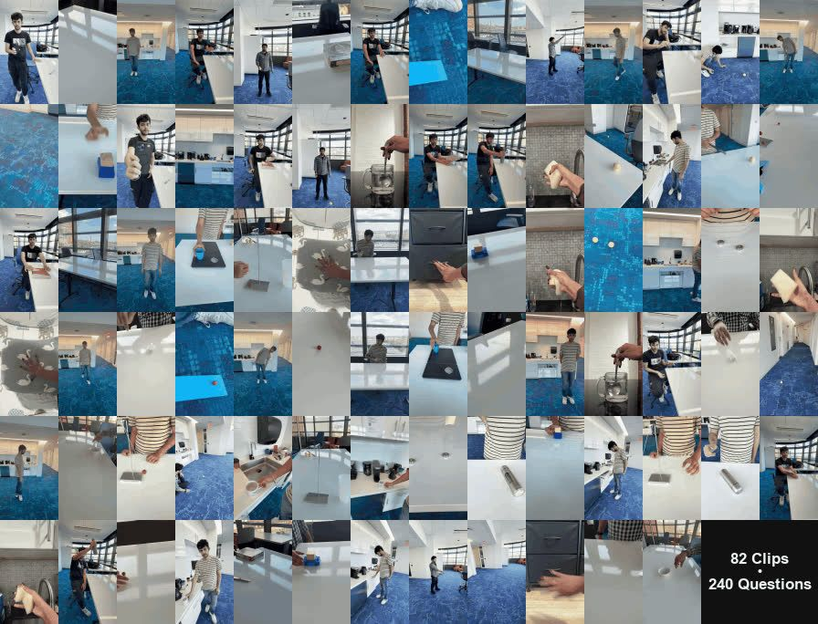

Research · ACLab · Jul–Sep 2026
MotionBlind
A contrastive benchmark that tests whether video-LLMs truly understand motion.
- 82 self-recorded clips and 240 Q&A items that differ only in speed, magnitude or direction.
- 170+ evaluation configurations across 8 video-language models, 4 frame selectors and 5 frame budgets.
- Open models sit at the 6.25% chance floor on motion despite 58–70% on standard video QA.
